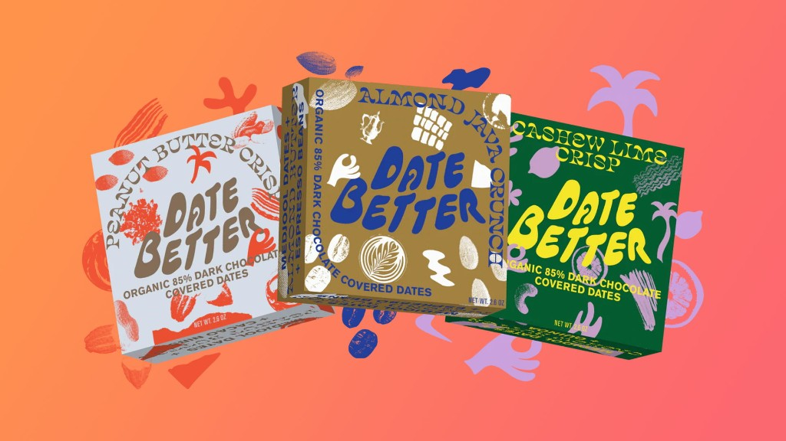

For Consumers
WISEcode UPF Detector™
The UPF detector that instantly tells you what's really in your food — from ultra-processed ingredients to personalized nutrition insights.
Learn more arrow_outward Find Your Food Truth™
Find Your Food Truth™
Find out instantly.
Scan any food and WISEcode reveals what's really inside — ingredient by ingredient, in plain language, backed by science.
From the phone in your hand to the enterprise answer engine — all built on the same science-backed food truth.
The UPF detector that instantly tells you what's really in your food — from ultra-processed ingredients to personalized nutrition insights.
Learn more arrow_outward
An AI-powered nutrition coach that analyzes thousands of food attributes against your goals, so you always know exactly what to eat.
Learn more arrow_outward
The only AI-powered food answer engine drawing from over a million products — instant answers for brands, retailers and researchers.
Learn more arrow_outward
Your food-truth assistant — ask anything about any food, the Non-UPF standard or WISEcoach, and get instant, plain-language answers.
Learn more arrow_outward
Our community of independent scientists, researchers and clinicians who pressure-test the science and stand behind every WISE verdict.
Learn more arrow_outwardPeople across the country are using WISE to understand what's really in their food. Here's what they have to say.
The Non-UPF Verified™ program is how brands prove their products meet the standard for non-ultra-processed food, so the brands doing the work earn the Shield and shoppers looking for honest food can finally find them — every ingredient checked for GRAS safety and processing.
Behind every ingredient list is industrial processing and confusing names never meant to be understood. WISEcode makes it plain — for you and your family.
WISEcoach analyzes thousands of food attributes against your unique health goals — so you always know exactly what to eat for more energy, better sleep, and a healthier life.
Draw from a database of over one million products to get instant, plain-language answers to any question about any food — and earn the Non-UPF Verified™ Shield.
Find out instantly whether it's ultra-processed — and what to eat instead.